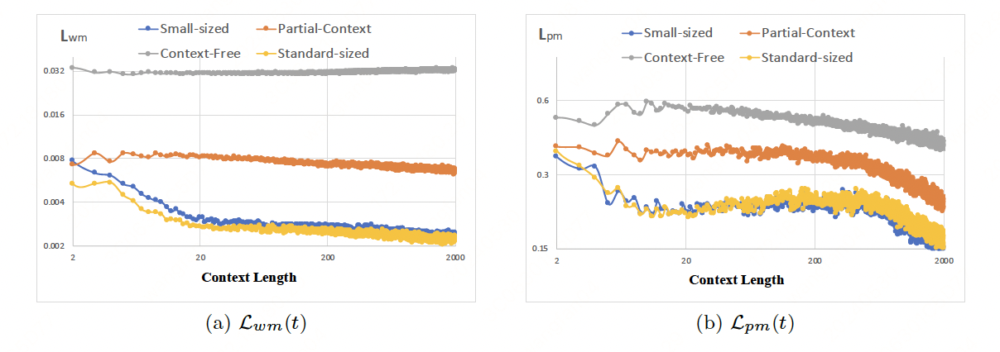

什么是通用上下文学习？为什么要强调它？
- 零样本泛化 （Zero-shot Generalization）: 模型具有将其所有训练过的数据和知识，记忆在参数空间，并利用上述知识，进行推理泛化解决问题。
- 小样本上下文学习 （Few-shot In-Context Learning）: 模型更进一步，具有通过提示（Prompt）信息，掌握在训练时，完全没有见过的数据/技能。
然而，当前的上下文学习还存在明显局限性：包括上下文学习的样本量通常不是很多（通常是少量示例）。而且上下文学习通常被限制在“指令跟随”级别，而无法在上下文内，做反复尝试和优化的复杂过程（如强化学习）。此外，尽管近期以来，大模型能够编码的上下文长度在不断增长，需要看到很多上下文编码不是真正的“学习”过程。大部分是偏简单的复制，召回特定内容等任务。
|
通用上下文学习定义及其和其他学习方法区别 |
- 低的零样本泛化能力（Low Zero-shot Generalization）.
- 长上下文学习周期（Long In-Context Learning Horizon）.
- 高上下文学习天花板（High In-Context Learning Potential）.
基于上述原因，我们认为，建立适合于通用上下文学习（GPICL）的训练和评测任务集非常重要。通用上下文学习顾名思义，可以泛化更广的未见任务，甚至包括不同模态，而不要求这些任务或者模态在预训练（Pre-training, 或者元训练 Meta-training）时被见过。具体的，我们认为通用上下文学习需要满足几个标准：
|
|
我们认为，相比于学习具体的，自然的语言，学习一种新的语言的过程符合GPICL的需求。然而，世界上常用的语言不过数百种，如果将自然语言的学习本身作为样本，其数量过于稀少。因此，一种理想的方式是创造近乎无数种类的“语言”。每个“语言”是一个超长序列的样本。模型通过上下文可以学会一种新的语言。我们提出一种“创造”这种新“语言”的方式，是用随机参数的网络，来生成随机的序列。这种随机的序列在相对较短的时候没有任何意义。但随着这个序列不断延长，生成该序列的内在规律可以被外部捕捉到。这种无限的“新语言”的序列，是GPICL理想的试验场。 我们发现，Transformer模型可以捕捉这种随机序列而产生上下文学习能力。我们证明，这种上下文学习能力是一种通用的上下文学习能力。因为模型不单单能通过上下文掌握一种新的随机序列，我们将用随机序列预训练模型用于真正的自然语言任务，发现它仍然具有学习能力。注意模型完全没有使用任何自然语言序列进行学习。 |

元语言模型在不同复杂度的元语言上的评测效果，最后PG-19是一个自然语言评测集。 模型的表现随着上下文长度的增加而变好，即便是没有训练过的自然语言亦是如此，证明元语言训练具有很好的泛用性。 此外，几千万参数的模型继续Scaling Up对效果并没有帮助。证明GPICL不是总需要巨大的参数量。 
元语言模型具备利用上下文学习完全未知数据的能力。这里元语言模型学习英文单词。模型能够捕捉英文单词的规律。 
元语言模型具备利用上下文学习完全未知数据的能力。这里元语言模型学习数学等式。模型能够捕捉数学等式的规律。 |
|
迷宫世界是一个规则明确，但多样性又足够显著的轻量级仿真环境。在迷宫世界中，可以轻易定制大小，结构，墙面完全不同的迷宫。在这个仿真环境中，我们设置了导航（NAVIGATION）和生存（SURVIVAL）两类任务。以导航任务为例，我们在迷宫中会随机加入多样的，一定数量的“地标”。这些标志随机产生在一个随机迷宫的不同位置。对于一个智能体，我们的环境会产生随机的指令，要求智能体尽快抵达特定颜色的地标。这要求智能体能够探索、记忆、定位、寻径，高效达成任务。且对于任何一个任务，因为迷宫和地标都是完全随机的，智能体除了依赖于自己探索，没有任何方式知道有关迷宫的任何先验信息。 除了环境本身，考虑强化学习一般较难规模化，我们提供了可供模型进行模仿学习从而快速热启动的“标杆智能体”。这类标杆智能体可以直接访问全局地图，但全局地图是有限制的，即它们必须先看到过才能记录下来。这类标杆智能体可以产生大量高质量的数据，供模型学习直接模仿。 我们的实验结果证明，使用Transformer结构进行上下文学习，具备“世界模型”（World Model）和“策略模型”（Policy Model）进行同时上下文学习的能力（据我们了解，这是第一个观察到世界模型ICL的工作），但当前实验结果也表明，当前模型离理想状态（如较好的标杆智能体）还有比较大差距，因此也存在巨大的优化空间。 |
|
迷宫世界环境和标杆智能体的地图记忆说明 
世界模型和策略模型一体的迷宫导航模型 评测中世界模型和策略模型显示出随着上下文变长的自适应能力 
利用上下文学习的世界模型在未来预测上变得越来越准确 |
上述两个环境，尽管我们上下文学习长度都只做到2K到4K, 我们可以通过修改配置，将上下文学习的最短长度扩展到百万甚至数十亿以上。我们相信，这类评测训练集对于长上下文学习，以及通用上下文学习具有重要意义。此外，尽管两个环境相对较简单也较轻量，但具有较大的研究意义。元语言目标是训练具有语言学习和适应能力的通用智能体，而迷宫的目标是具有未知环境的探索、定位、导航能力一体的通用具身智能体。
此外，我们的工作也应证了之前很多工作的发现：上下文学习能力和模型参数规模具有很弱的关联（在模型参数超过一定阈值后， 其上下文学习能力不再增加），而和上下文，以及记忆状态的规模存在正向的强关联。这给我们揭示一条不同于直接暴力增加参数规模的道路：足够大的参数 + 大量记忆和上下文知识。
基于此，我们还提出不同于当前大语言模型的一种新的可能的训练方法：通过海量的合成数据，训练通用上下文学习的能力。再通过小规模的高质量数据，对齐模型和人类的偏好。这和自然智能的产生更为相似： 前者对应几十亿年生命进化，后者则对应人类个体的一生。
|